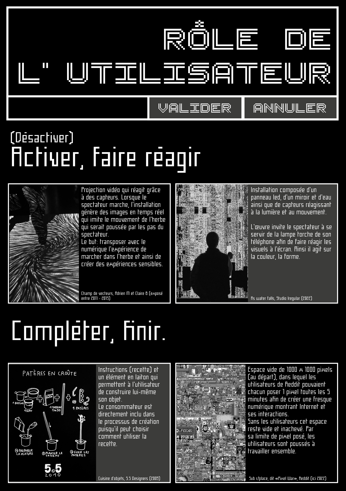
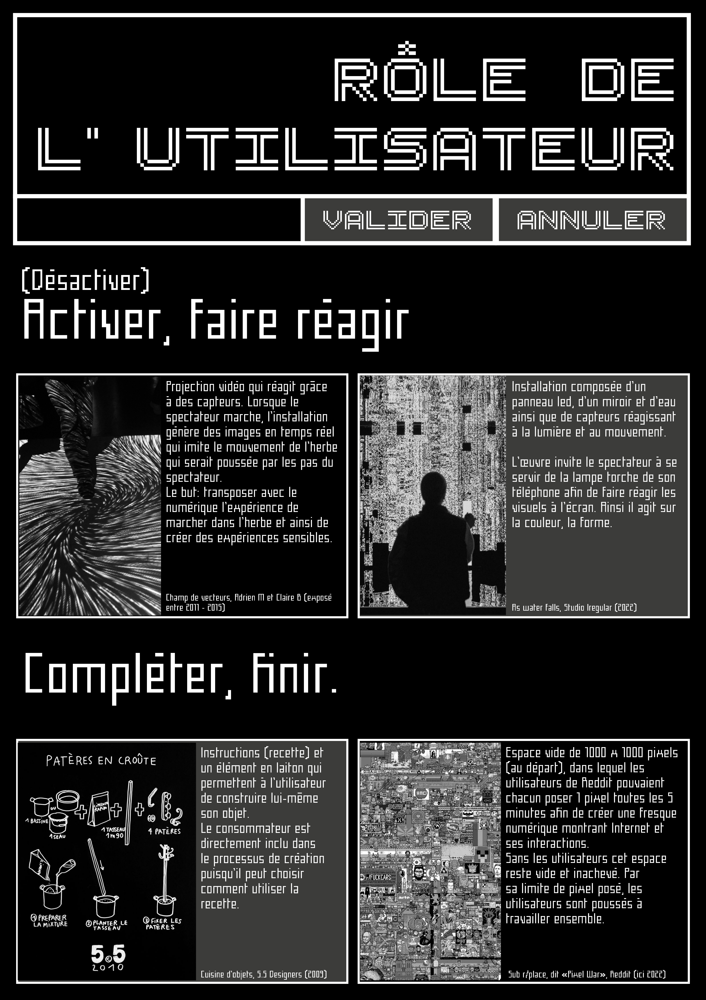

Autres projets
Passage à soi
Collaboration avec le Théâtre 71 de Malakoff autour de la pièce ANNETTE. Réalisation d'un objet de médiation réalisé entièrement à la découpe laser.
Nous avons été très touchées par une scène de la pièce où Annette décrit qu’elle explore les terminus des bus. Cette anecdote met en lumière la façon dont l’espace peut être le reflet de l’émancipation. Nous avons ainsi créé une carte qui reprend les lieux mentionnés par Annette. Des cartes sont associées à chacun de ces lieux et des questions permettent d’engager la discussion autour de sujets parfois difficiles.
Projet réalisé avec Julie Zeitoun


FAR
Fiction d'Anticipation pour la Renaturation
Dispositif d'enquête
Jeu de plateau pensé pour des enfants de primaire. Plateau, cartes et enveloppes contenant tout ce qu’il faut pour jouer ! Ce jeu de plateau vise à interroger des enfants d’une école primaire de la Courneuve sur leurs habitudes et leur mode de vie mais aussi sur leur vision de leur ville. Nous souhaitions proposer des visuels colorés qui pourraient tout de suite engager l’attention des enfants.
Projet réalisé avec Julie Zeitoun dans le cadre de la recherche-création de Joffrey Lavigne sur les fictions d’anticipation pour la renaturation.


Posters
 


Peinture
Avant le dénouement